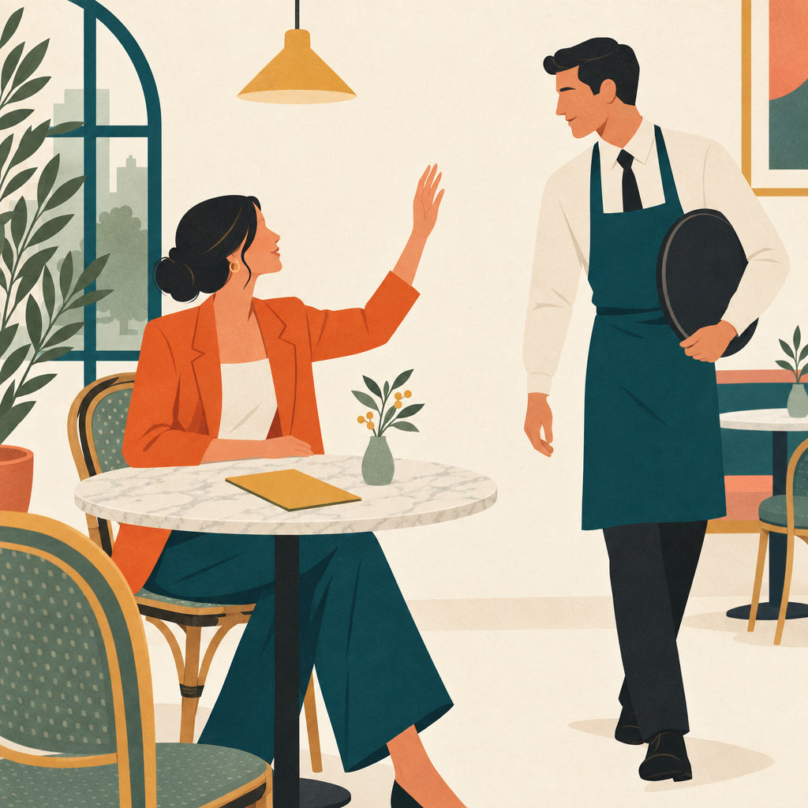
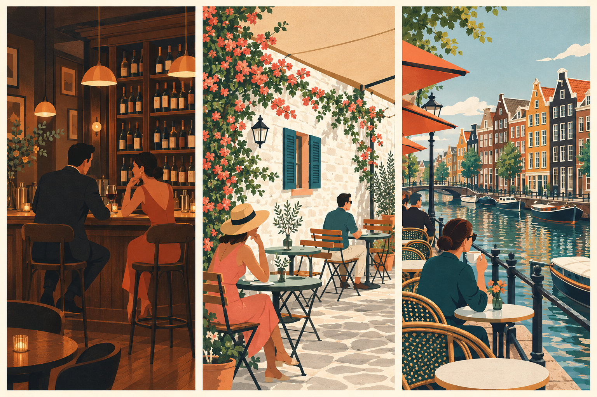
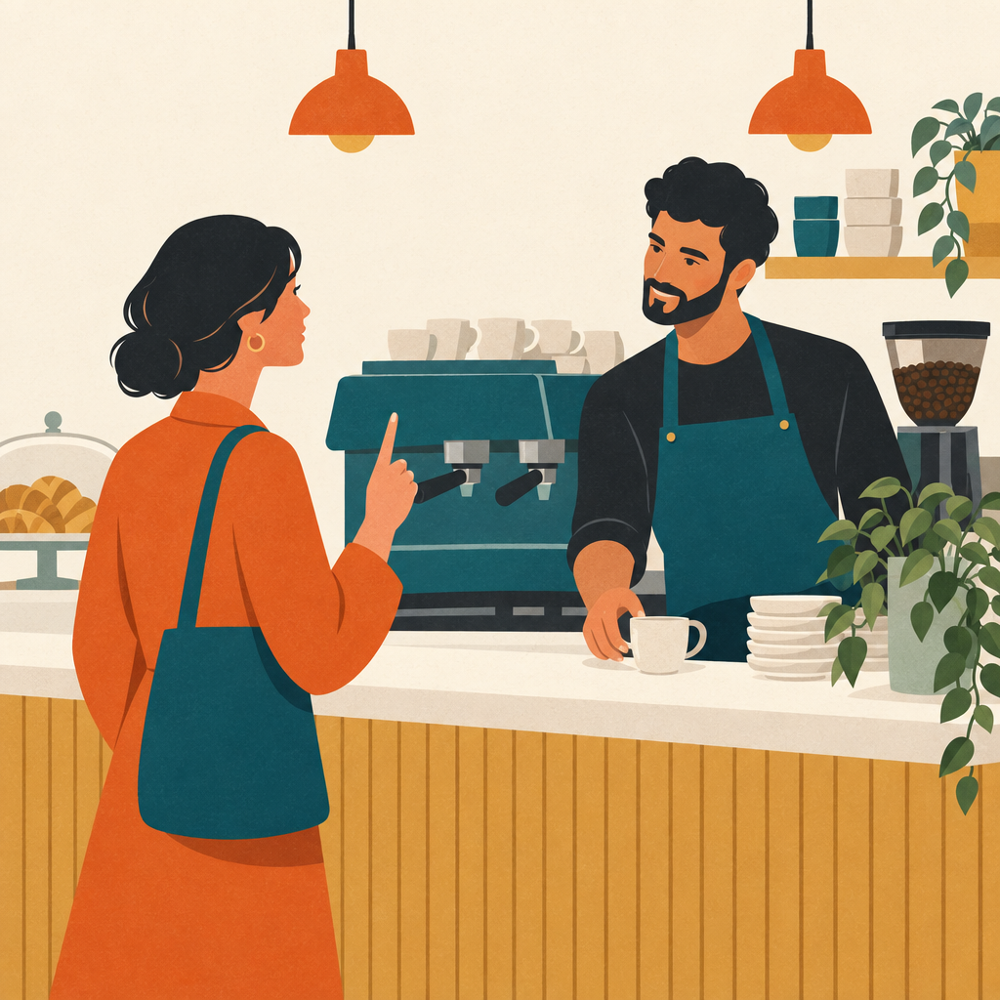

Mag ik een biertje? Ik wil graag een biertje. Een biertje, alstublieft. Voor mij een biertje.
Opdracht 2
One person orders something. The next repeats it and orders something too. The third repeats the first two orders and adds their own.
Example
A: Ik wil graag een cola. B: Voor mij een cola en een biertje. C: Mag ik een cola, een biertje en een rode wijn? D: …
3.4 Afrekenen
Mag ik de rekening (alstublieft)? Ik wil graag afrekenen / betalen. Mogen / Kunnen we betalen / afrekenen?
3.5 Bedanken
dank je / dank je wel / dank u (wel) bedankt
zes6
Hoofdstuk 3 · In het café3.5 Bedanken
Opdracht 3Variëren in de dialoog
Work in groups of three: 1 = Edit, 2 = Susy, 3 = Andres + the waiter.
Lees de tekst twee keer voor. Lees de eerste keer de tekst gewoon. Maak de tweede keer veranderingen in de tekst.
Example
Ik neem rode wijn.
Ik wil witte wijn.

zeven7
Hoofdstuk 3 · In het café3.5 Bedanken
Opdracht 4De tekst compleet maken
Complete the café conversation. Fill in one or two words.
Henk, Raiza en Ella zijn in een café. Ze gaan samen iets drinken.
Henk:
Wat willen jullie ?
Raiza:
Ik neem .
Henk:
En jij, Ella? Wat ?
Ella:
O, ik het niet. Ik neem ook wijn. Of koffie? Ja, ik koffie.
Raiza:
Daar is de ober. Meneer! Kunnen wij ?
Ober:
Ja, zegt u het maar.
Henk:
Een biertje, een en .
Ober:
Prima.
Ober:
Voor is de koffie?
Ella:
Voor mij. Dank .
Raiza:
Hoe laat is het?
Henk:
.
Raiza:
O, ik moet weg. Ik heb een afspraak om . Zullen we ?
Ella:
Ik betaal .
Raiza:
. Tot ziens!
Henk:
.
acht8
Hoofdstuk 3 · In het café3.6 Artikel
3.6 Artikel
Welkom in de cursus Nederlands. Ik roep de ober. Edit viert haar verjaardag in het café. Nee, ik ben jarig, daarom betaal ik het eerste rondje. Doe mij maar een biertje. Zullen we nog een keer bestellen? Ik wil graag cola. Ik neem rode wijn.
definiet
indefiniet
de-woord
de cursus
een cursus
het-woord
het café
een café
diminutief
het rondje
een rondje
pluralis
de cursussen de cafés de rondjes
cursussen cafés rondjes
diminutief
het rondje het zusje het kopje
negen9
Hoofdstuk 3 · In het café3.6 Artikel
Opdracht 5
Choose the correct article for each word: de or het. Check your answers against the word list. Note down the words you got wrong, with the right article.
adres broer café cursus rondje foto
gezin haar zomer kantine koffie biertje
zus seizoen maand land pauze tekst
tien10
Hoofdstuk 3 · In het café3.7 Inversie
3.7 Hoofdzin met inversie
Nu
wil
ik
ook een biertje.
Dit rondje
betaal
ik
Opdracht 6
Read the sentence, but start with the highlighted part.
Joyce is donderdag jarig.
We drinken koffie in de kantine
Ze zijn op het moment in Indonesië.
Ik weet dat niet.
Ze wonen in de winter in Barcelona.
We gaan na de pauze verder.
Ik heb Susy’s adres niet.
We spreken later over de tekst.
Ik neem nu ook wijn.
Eddy geeft vandaag les.
We beginnen morgen met tekst 3.
De tekst begint op bladzijde 2
Example
Ik wil nu een cola.
Nu wil ik een cola.
elf11
Hoofdstuk 3 · In het café3.8 Rangtelwoorden
3.8 Rangtelwoorden
1eeerste
2etweede
3ederde
4evierde
5evijfde
6ezesde
7ezevende
8eachtste
9enegende
10etiende
11eelfde
12etwaalfde
13edertiende
14eveertiende
15evijftiende
16ezestiende
17ezeventiende
18eachttiende
19enegentiende
20etwintigste
21eeenentwintigste
100ehonderdste
Opdracht 7
Ask the person next to you.
Welke dag van de week is maandag?
Welke maand van het jaar is juli?
Welke letter van het alfabet is de d?
Op welke dag ben jij jarig?
Welke dag is het nu?
Hoeveel kinderen heeft jullie gezin? Het hoeveelste kind ben jij?
De hoeveelste les is dit?
twaalf12
Hoofdstuk 3 · In het café3.8 Rangtelwoorden
Opdracht 8Woordwolk
Here is a word cloud. Talk in pairs. Make sentences with the words from the cloud. Use every word.
Hoi, Volgende week woensdag 9 mei ben ik jarig en dan word ik 20! Ik wil dit graag met jullie vieren. Kom je ook naar café De Dromer vanaf 21.00 uur? Benedetta
Schrijf een reactie naar Benedetta.
dertien13
Hoofdstuk 3 · In het café3.9 Tekst
3.9 Tekst
Bij goed weer kun je op dit terras zitten. Je drinkt dan buiten een lekker kopje koffie, een biertje of cola. In de zomer kijk je naar de boten in het water.
Opdracht 10
Op welke foto staat dit café?

abc
veertien14
Hoofdstuk 3 · In het café3.10 Uitspraak
3.10 Uitspraak: o – oo
Opdracht 11Woordaccent
Which part of the word carries the stress, the accent? Underline that part.
Ik vier mijn verjaardag thuis / in een café / niet / … Mijn familie / vrienden / collega’s / buren / … komen op mijn verjaardag. Ik trakteer op taart / op … / niet.
In de praktijk
Bestel iets in het Nederlands
Ga je naar een café of restaurant? Bestel dan iets in het Nederlands.

achttien18
Hoofdstuk 3 · In het caféEigen vocabulaire
Eigen vocabulaire
Eigen vocabulaire
The theme of this chapter is In het café.
Which words would you like to add? Write them below.
negentien19
Hoofdstuk 3 · In het caféReflectie
Reflectie
What can you do now?
Can you now understand the dialogue at the start of this chapter?